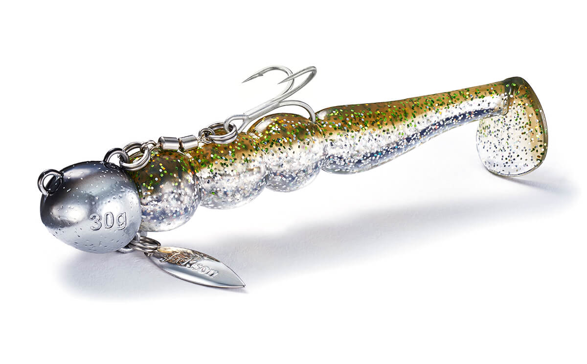
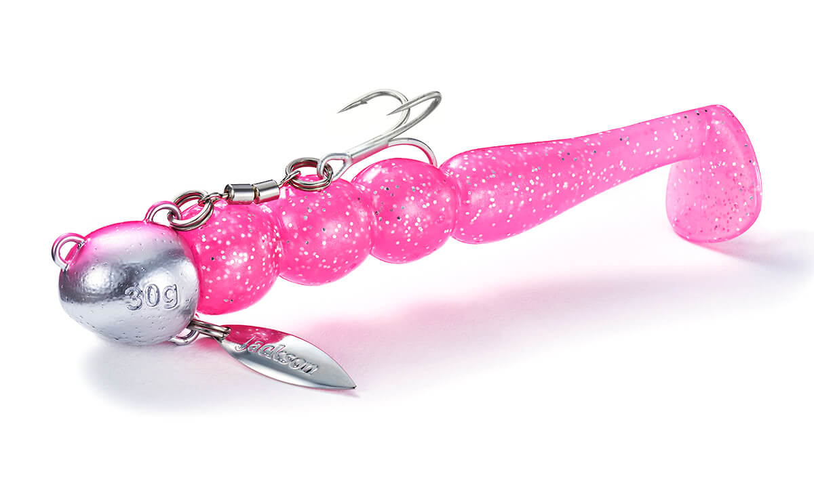
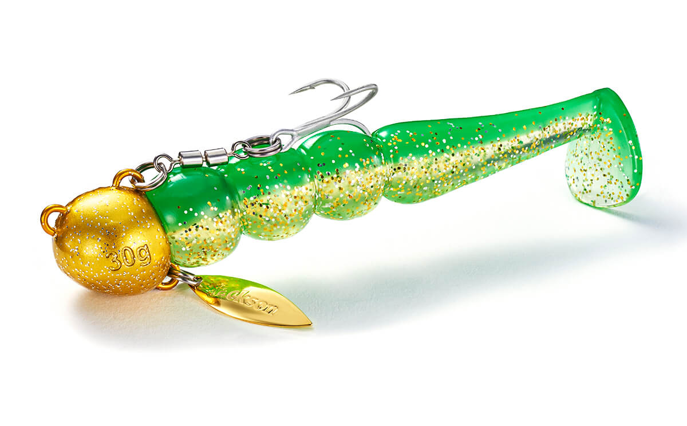
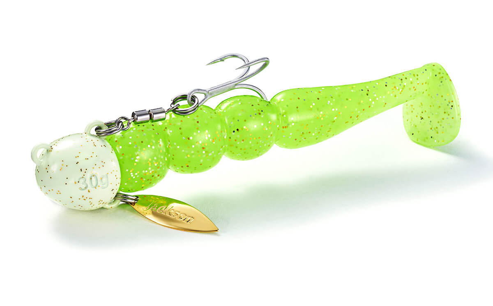

砂団子
（Sunadango）
砂団子（スナダンゴ）はJackson（ジャクソン）のフラットフィッシュ用ワームです。
ボートのフラットゲームに完全対応しながら、サーフや堤防からも使える本格仕様。独特の団子型ボディがうねるようなウォブリングを生み、ヒラメ・マゴチなど砂モノの捕食本能を強く刺激します。

画像出典:Jackson公式HP
スペック
- メーカー
- Jackson（ジャクソン）
- タイプ
- ワーム（ヘッド・ブレード付き）
- 重さ
- 20g／30g
- ワームサイズ
- 3.3インチ
- ターゲット
- ヒラメ・マゴチなどフラットフィッシュ
- 価格
- 1,100円（20g）／1,155円（30g）（税込）
▼今すぐチェック

砂団子の特徴
ボートでもサーフでも使える、砂モノ攻略のワーム
-
うねるように動く団子型ボディ
団子が連なったような独特のボディが、うねるようなウォブリングを生みます。状況やベイトのサイズに合わせて団子部分をカットすれば、ボディのサイズとアクションを変えられます。
-
腹部の小型ウィローブレード
腹部に付いた小さなウィローブレードが、ワームだけでは出せないフラッシングでさらにアピールします。
-
ボトムが分かりやすいラウンドヘッドとクレンアシスト
シンプルなラウンドヘッドで、ボトムバンプやズル引きでも着底が分かりやすい設計。フッキング後はクレンアシストが柔軟に回転・追従して、バラシを大きく減らします。
砂団子の使い方
ボトムまで沈めてから、ゆっくりのただ巻きやボトムバンプ、ズル引きで底付近をトレースするのが基本。ヘッドの水受け抵抗があるので、着底や底の変化を感じ取りやすくなっています。
ボートではバーチカルに落としてボトム付近を誘い、サーフや堤防ではキャストして広く探りましょう。
砂団子の得意な状況
ボートからのヒラメ・マゴチ狙い、サーフや堤防でのフラットフィッシュゲーム。プラグやジグで反応がないときに、ワームのナチュラルな動きで食わせたい場面に向いています。
ワンポイント
ボートのフラットゲームでバーブレスフックにしても、クレンアシストの追従性で魚を傷つけずに確実にキャッチしやすい設計です。リリース前提の釣りにも向いています。
重さの使い分け
| 重さ | ワーム | 使いどころ |
|---|---|---|
| 20g | 3.3インチ | 浅いサーフや堤防、潮の緩いときに。ゆっくり見せたいときに |
| 30g | 3.3インチ | 水深のある場所、潮の速いときやボートで。遠投したいときに |
ワームの団子部分をカットするとシルエットを小さくでき、アクションも変わります。ベイトが小さい日は1〜2つ団子を減らすのも手です。
人気カラー
全8色のラインナップから4色を紹介します（カラー名は公式の表記のまま）。

GMD 黒胡麻黒系のシルエットがはっきり出るカラー。濁り潮や曇りの日に。

SMD 桜餅ピンク系のアピールカラー。朝夕のマヅメに。

UKD 宇治金時緑と赤金を組み合わせたカラー。濁りが入った日のアピールに。

ZDD ずんだ明るい緑系のカラー。日中の澄み潮で、ほかの色と差をつけたいときに。
画像出典:Jackson公式HP
砂団子に似ているルアー
-
 ジョルティ
ブルーブルー
詳細はこちら＞
ジョルティ
ブルーブルー
詳細はこちら＞
ブレード付きのジグヘッドワーム。サーフのヒラメ・マゴチにも使える定番リグ。
-
 VJ-16
コアマン
詳細はこちら＞
VJ-16
コアマン
詳細はこちら＞
ジグヘッドとワームが一体のバイブレーションジグヘッド。巻くだけでボトム付近を探りたいときに。
-
 アイアンジグヘッド IJ-16
コアマン
詳細はこちら＞
アイアンジグヘッド IJ-16
コアマン
詳細はこちら＞
鉄板バイブとワームを組み合わせたリグ。もっと強い波動で広く探りたいときに。